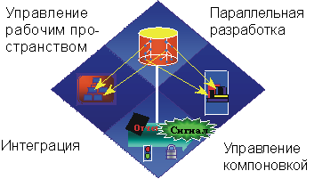

| Change Management |
 |
|
| Связанные элементы |
|---|
|
 Управление изменениями представляет собой больше, чем сопоставление файлов. Оно включает управление рабочими областями, параллельную разработку, интеграцию и компоновки. Ключевой задачей при разработке систем с обширным программным обеспечением является то, что необходимо руководить несколькими разработчиками, организованными в различные коллективы и совместно работающими над несколькими итерациями, выпусками, продуктами и платформами. В отсутствие строгого контроля процесс разработки быстро превращается в хаос. В Rational Unified Process в разделе Configuration & Change Management описывается, как можно решить эту проблему. Координация деятельностей и артефактовКоординация деятельностей и артефактов разработчиков и коллективов включает установление повторяемых процедур управления изменениями в программном обеспечении и в других артефактах разработки. Такая координация обеспечивает лучшее выделение ресурсов на основании приоритетов и рисков проекта, и активно управляет работой над такими изменениями в итерациях. В сочетании с итерационной разработкой программного обеспечения такая технология позволяет постоянно отслеживать изменения, что обеспечивает возможность активного обнаружения и исправления неполадок. Дополнительная информация по данному разделу приведена в разделе Деятельность: Управление запросами на изменения. Координация итерация и выпусковКоординация итераций и выпусков включает установление и выпуск протестированной базовой линии после выполнения каждой итерации. Поддержание трассируемости элементов в каждом выпуске и элементов в нескольких параллельных выпусках является важным для оценки и активного управления влиянием данного изменения. Дополнительные сведения приведены в разделе Деятельность: Управление выпусками базовых линий. Контроль изменений в программном обеспеченииКонтроль изменений в программном обеспечении обеспечивает ряд решений для корневых причин неполадок разработки программного обеспечения:
|
© Copyright IBM Corp. 1987, 2006. Все права защищены.. |